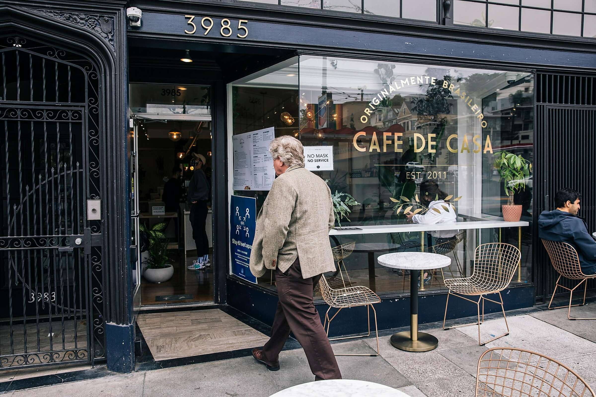
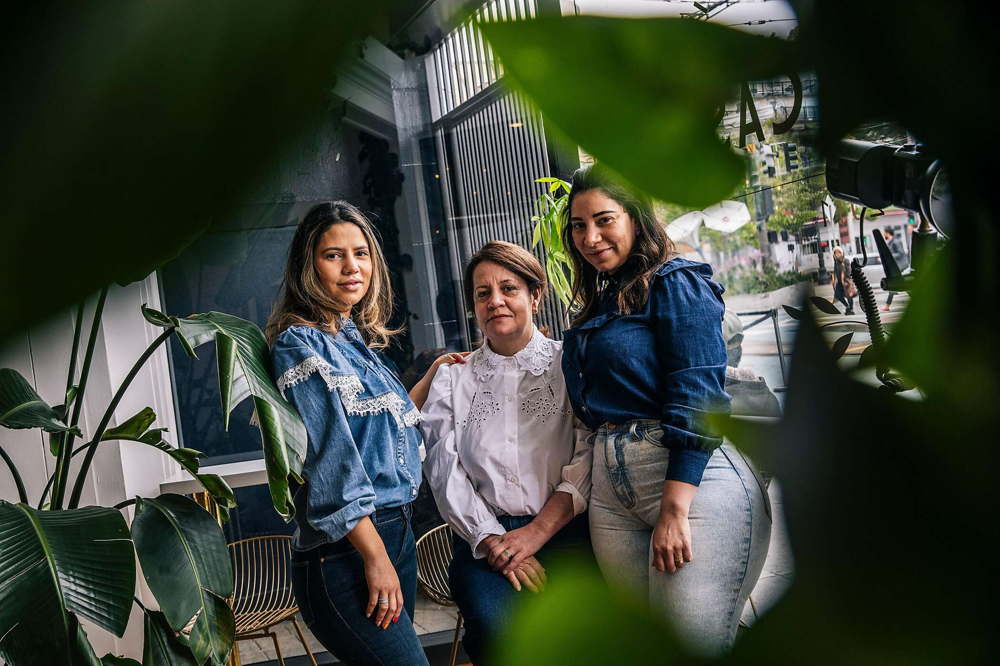

 Visit the South San Francisco location of Cafe de Casa on any given day, and you’re likely to find a Brazilian eating rice and velvety beans, the crispy, cheesy puffballs known as pão de queijo and the creamy chicken-stuffed dumplings called coxinhas. The restaurant has become a hub for Brazilians living in the Bay Area — particularly as a stopover for the many Brazilian cab and delivery drivers who go to and from the airport. By some estimates, there are more than 15,000 Brazilians in the Bay Area.
“Coming here gives me a chance to quell the saudade (longing) of that special flavor of Brazilian food,” says Pedro Oliveria, a delivery driver who eats there three times a week. “The way things are seasoned here especially are just like the food back home.” It’s a testament to the work of Lucimar Canedo and her daughters, Thais and Amanda Moreira. Since the family took over Cafe de Casa in 2011, the restaurant has thrived in part due to the home away from home that it has provided many of the Brazilians living in the Bay Area. Today, the restaurant has two additional locations, one in Fisherman’s Wharf and a bigger and more ambitious location in the Castro that opened right before the shelter-in-place order hit. Reference: https://www.sfchronicle.com/e
 No food item makes me feel like being back home in Brazil quite like pão de queijo. The puffy, round cheese breads are commonplace throughout the country. When I take a bite, I’m reminded of buying a fresh batch at corner bakeries, at roadside luncheonettes on drives through Sao Paulo with my dad, or as a starter at Brazilian steak houses. Made with tapioca flour, these simple and perfect treats are brown and crispy outside, and airy and slightly gooey inside. They’re also gluten-free. Cafe de Casa’s recipe is more airy than most, and I love that consistency because you always want to eat more than one. Make your own batch at home using Dona Lucimar’s recipe.
½ cup of milk
½ cup of water
½ cup of vegetable oil
2 cups of tapioca flour (see Note)
4 large eggs
½ cup Parmesan cheese
1 cup cotija cheese
Instructions: Combine the milk, water and oil in a saucepan and bring to a boil over medium-high heat. Add the tapioca starch to the bowl of a stand mixer fitted with the paddle attachment.
Once the milk mixture comes to a boil, remove it from the heat and pour it over the tapioca flour. Turn the mixer on and mix it well. The texture will be fondant-like: really white and sticky.
Turn the mixer off and let it cool for 15 minutes. (This step is very important.) Preheat the oven to 350 degrees. Line a baking sheet with parchment paper. Once the mixture has cooled for 15 minutes, turn the mixer back on, and add the eggs one at a time. (You might be inclined to think that they won't mix since the tapioca flour mixture is so sticky, but hang in there because they will.)
Once the eggs are incorporated, add the cheese a little at a time until fully incorporated. The dough should be soft and sticky
To shape the balls, wet your hands with cold water or oil. Using a spoon, scoop some of the dough to shape balls that are a little smaller than a golf ball. Place the balls on the baking sheet and place in the oven.
Bake for 15-20 minutes or until puffed and golden. Serve warm.